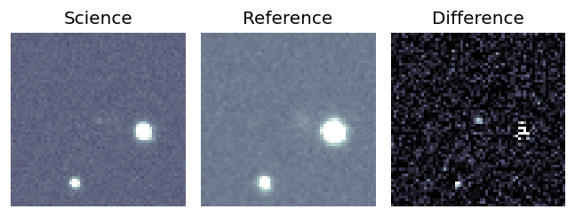
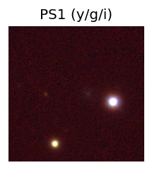
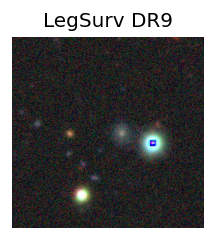
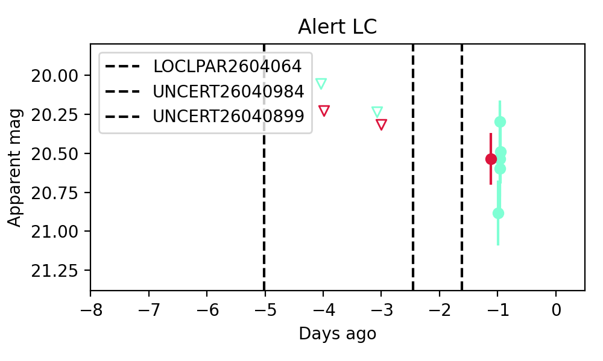

Candidate List 20260411Previous Day Next Day
Section 1: New Sources (age<1d) Section 2: Old (1-5d) sources observed last nightplaceholder
Section 1: New Afterglow/FBOT Cands Last Night (0)
Section 2: Older Sources Observed Last Night (4)
0. ZTF26aarvjmx (Afterglow?) [Back to Top] [Share] [Trigger Swift] [Fritz] [Lasair]RA, Dec: 223.89261, -20.24338 14h55m34.23s, -20d-14m-36.15sGalactic (l, b): 338.57544, 33.89855 WARNING: -3.37 deg from ecliptic plane ext(g-r) = 0.119


TESS: Sectors [ 91 115]
PS1: 1 source in 3 arcsec Closest: d = 0.98 arcsec photoz=0.17+/-0.05 peak abs mag = -20.11
LegacySurvey: 0 sources in 3 arcsec

Extinction-corrected gr color:
From alerts: -0.21 +/- 0.17 mag
Extinction-corrected gi color:
From alerts: -0.99 +/- 0.37 mag
Extinction-corrected ri color:
From alerts: -0.78 +/- 0.34 mag
Rise Rate:
g: 0.07 mag/day
r: 0.06 mag/day
i: 0.04 mag/day
Fade Rate:
g: -99 mag/day
r: -99 mag/day
i: 0.41 mag/day
1. ZTF26aasadgb (Afterglow?) [Back to Top] [Share] [Trigger Swift] [Fritz] [Lasair]RA, Dec: 173.25662, 57.99796 11h33m1.59s, 57d59m52.66sGalactic (l, b): 141.57203, 56.20158 ext(g-r) = 0.015


TESS: Sectors [ 14 15 21 41 120]
SDSS (10 arcsec):Found SDSS phot-z: z=0.08; peak abs mag = -18.54
PS1: 0 sources in 3 arcsec
LegacySurvey: 1 sources in 3 arcsec Closest: d = 0.89 arcsec, 240.7 deg (east of north) photoz=0.08 (68% bounds 0.07, 0.09), type=SER peak abs mag = -18.63 (68% bounds -18.34, -18.97)

Extinction-corrected gr color:
From alerts: -0.13 +/- 0.16 mag
Consistent with synchrotron, g-r>0!
Rise Rate:
g: 0.35 mag/day
r: 2.01 mag/day
i: -99 mag/day
Fade Rate:
g: -99 mag/day
r: 0.29 mag/day
i: -99 mag/day
2. ZTF26aaschzj (Afterglow?) [Back to Top] [Share] [Trigger Swift] [Fritz] [Lasair]RA, Dec: 258.2539, -11.59389 17h13m0.94s, -11d-35m-38.02sGalactic (l, b): 10.65573, 15.74535 ext(g-r) = 0.733


TESS: Sectors [ 91 118]
PS1: 1 source in 3 arcsec Closest: d = 7.12 arcsec photoz=0.61+/-0.20 peak abs mag = -26.80
LegacySurvey: 0 sources in 3 arcsec

Extinction-corrected gr color:
From alerts: -0.38 +/- 0.07 mag
Rise Rate:
g: 0.39 mag/day
r: 0.28 mag/day
i: -99 mag/day
Fade Rate:
g: 0.39 mag/day
r: -99 mag/day
i: -99 mag/day
3. ZTF26aasknxq (Afterglow?) [Back to Top] [Share] [Trigger Swift] [Fritz] [Lasair]RA, Dec: 230.85817, 16.00061 15h23m25.96s, 16d 0m2.19sGalactic (l, b): 23.333, 53.11607 ext(g-r) = 0.041


TESS: Sectors 51
SDSS (10 arcsec):Found SDSS phot-z: z=0.17; peak abs mag = -19.53
PS1: 0 sources in 3 arcsec
LegacySurvey: 1 sources in 3 arcsec Closest: d = 5.05 arcsec, 265.5 deg (east of north) photoz=0.25 (68% bounds 0.21, 0.28), type=REX peak abs mag = -20.25 (68% bounds -19.82, -20.57)

Extinction-corrected gr color:
From alerts: -0.07 +/- 0.19 mag
Consistent with synchrotron, g-r>0!
Rise Rate:
g: 13.88 mag/day
r: -99 mag/day
i: -99 mag/day
Fade Rate:
g: -99 mag/day
r: -99 mag/day
i: -99 mag/day